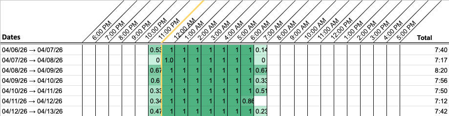
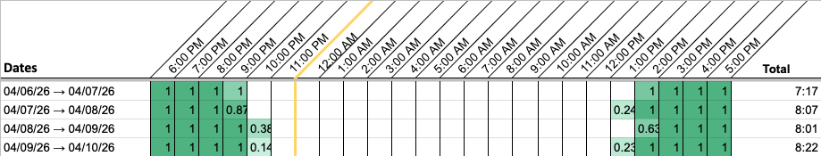
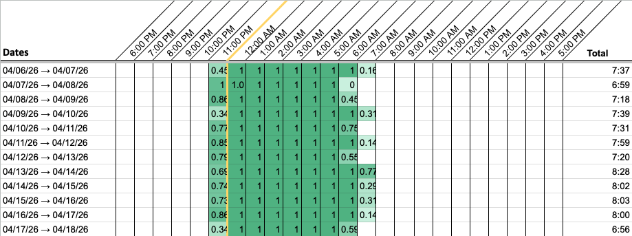
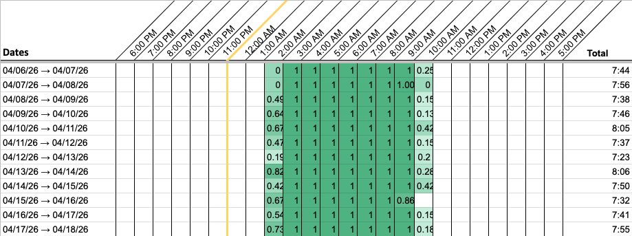
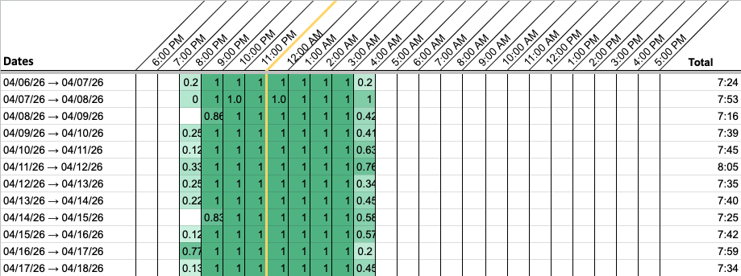
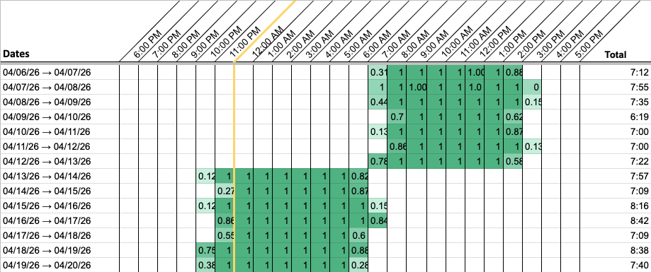
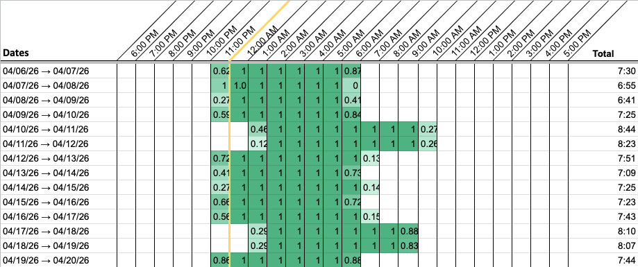
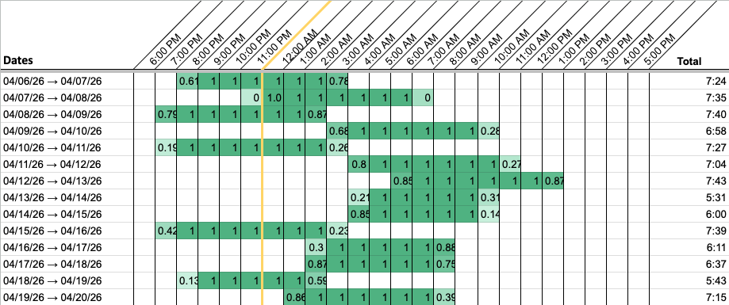
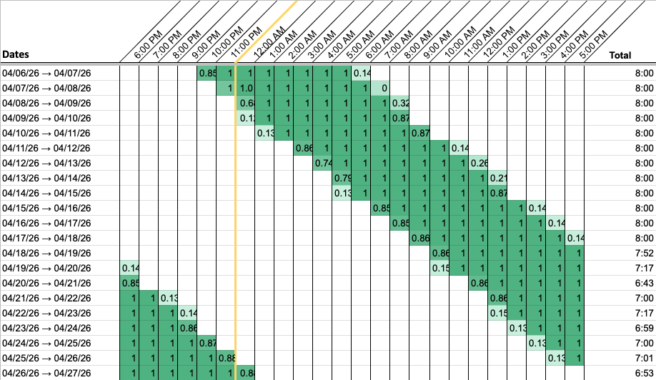
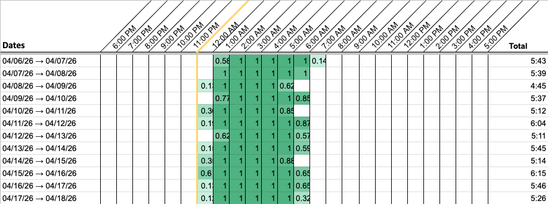

How to read your sleep chart
The sleep chart shows timing, the shape of your sleep against the clock.
tl;dr:
- Each row is one night.
- Green is time in bed.
- The left edge is when you turned in.
- The right edge is when you got up.
- The number at the end is how long you were there.
Nothing here is medical advice, nor intended to treat or diagnose. If something about your sleep worries you, skip to when to show this to a doctor.
On this page
What you’re looking at

A row is a sleep day, 6pm to 5pm. Not a calendar day. A night that starts at 11pm and ends at 7am sits in the middle of a row in one piece, instead of being cut in half at midnight. This is the least obvious thing about the sleep chart, and it explains most of what looks strange at first.
A column is an hour on the clock. 6pm at the far left, midnight in the middle, 5pm at the far right.
Green means you were in bed. A full green cell is the whole hour. 0.67 is about forty minutes of it, which is why the first and last cells of a night are usually partial.
The number at the end of the row is your total time in bed.
The Notes column is yours. It’s free text, so type whatever you want into it, and whatever you type stays attached to that night.
Two green runs in one row is not two sleeps. Green at both far ends of a row with white in between is the 6pm boundary: one long sleep whose tail and head landed in the same row.

Sleep Cycle records one sleep a day and isn’t built for naps [12], so a daytime sleep usually isn’t on the sleep chart at all. If part of your sleep chart looks wrong rather than just surprising, the caveats page covers it.
Three things to look at first
-
The left edge — when you get in bed. The most changeable thing on the sleep chart, and often the one that moves everything else.
-
The right edge — when you get up. Often set by an alarm, so it can hold steady while the left edge changes based on what you choose.
-
The total — how much. It’s third because when is usually the thing that moves how much, rather than the other way round.
Those first two are timing. The third is quantity. They’re different problems — “I sleep fine, but at 4am” and “I’m in bed nine hours and still wrecked” can need completely different approaches.
Shapes people find in their own sleep charts
Seven shapes, grouped by which of those three things they show up in. Most people match one; some match two. The list comes from what has been measured about how people sleep.
Each one gets the same three lines:
-
What it looks like on the grid
-
What it usually means
-
What it doesn’t establish
Where your block sits
1. One block, in the same place most nights

On the grid: one run of green per row, starting and ending at roughly the same hour.
Usually means: this is what a sleep chart is supposed to look like, and plenty of people’s do. A steady left edge with a ragged right edge is very common.
Doesn’t establish: whether the ragged right edge matters. The research on regularity scores bedtime and wake time together and gives wake time no exemption [3][4].
2. Steady, but earlier or later than everyone else


On the grid: the block is tidy and lands in the same place every night. It just isn’t where other people’s lands.
Usually means: you’re an early type or a late type, and the spread is wide. Measured across 53,689 Americans, the middle of sleep on free days spans nearly ten hours end to end — a quarter of people fall before 2:24am, a quarter after 4:15am [9]. It also moves with age on a predictable curve, latest at around 18 or 19 and earlier every year after that [9]. A nineteen-year-old and their grandmother can both have textbook-healthy sleep charts that look nothing alike.
There’s a point where it stops being a type and starts having a name:
- Persistently late — sleep starting somewhere between 1am and 6am, and not movable to fit work or school — is called delayed sleep-wake phase disorder, and it affects around 1% of adults and around 3% of adolescents [6].
- Persistently early — in bed between 6pm and 9pm, awake between 2am and 5am — is called advanced sleep-wake phase disorder, around 1% of middle-aged adults [6].
Doesn’t establish: being a late or an early type is not a disorder. What separates the type from the condition is that the timing can’t be moved and that it causes a real problem in the person’s life [5][6]. A delayed phase is also stable and late rather than drifting — the drifting shape is number 6 below, and the two can be confused [5].
3. Blocks in the daytime

On the grid: the main block sits in the morning or afternoon columns, or alternates between day and night from row to row.
Usually means: shift work. Between 20% and 30% of the workforce in industrialised countries works shifts [6], which is more people than every named condition on this page put together.
Doesn’t establish: the sleep chart can’t tell a night nurse from someone whose body clock has come loose. What it does show is whether the pattern is consistent nights or rotating, which is the distinction that matters.
How much it moves
4. Two schedules

On the grid: weekday edges and free-day edges an hour or more apart. It looks like stripes when you scroll fast.
Usually means: a work schedule and a body clock that disagree. It’s sometimes called social jet lag, and it’s by a wide margin the most common shape on this page — around two-thirds of the working and studying population in industrialised countries run at least an hour of it, and roughly half run two hours or more [2].
Two versions are worth telling apart: the free-day block shifted later, which is a timing problem, and the free-day block simply longer, which is catching up and usually runs an extra hour or two on non-work days [4].
One more thing, because it saves people a fright: a late type held to an early weekday schedule is the social jet lag case [2][9]. If you match this entry and number 2, that’s usually one thing seen from two ends rather than two things wrong with you.
Doesn’t establish: a gap between your two schedules describes your week. It isn’t a verdict on it.
5. Never settles

On the grid: the left edge moves and doesn’t come back to anything. Not two clusters. Scatter.
Usually means: a chaotic fortnight — a new baby, a deadline, a move, a bad stretch. Charts have seasons.
Doesn’t establish: anything beyond a rough stretch, and the fix for most rough stretches isn’t medical. One much rarer thing is worth naming here, though, because it has nowhere else to go: no main block at all, sleep broken into three or more short stretches around the clock with none of them dominant. That’s irregular sleep-wake rhythm disorder [6], and it is badly under-recognised, particularly in care settings [11]. If that’s what your sleep chart looks like, the last section on this page is the one to read.
6. Later every day

On the grid: the left edge walks steadily to the right, half an hour to an hour a day, and keeps going. Past midnight, into the morning, round the clock and back again.
Usually means: non-24-hour sleep-wake rhythm disorder, also called a free-running rhythm [6]. It’s found in more than half of totally blind people; in sighted people it’s rare, and nobody knows how rare [6]. Important to note, this is what N24 sleep looks like when the person is not trying to keep a schedule but allowed to sleep and wake naturally.
Doesn’t establish: two weeks of drifting later over a holiday is not this. The defining feature is that it doesn’t stop and doesn’t reset.
How long it is
7. Short, most nights

On the grid: totals consistently under seven hours, wherever the edges sit.
Usually means: the most common single thing on this page. 30.5% of US adults report sleeping under seven hours [10], against a target of seven or more set jointly by the American Academy of Sleep Medicine and the Sleep Research Society [8]. Read it against the left edge, because short-because-you-went-to-bed-at-3am and short-because-you-woke-at-4am are different problems with different answers.
Doesn’t establish: how much sleep you need. The consensus statement is explicit that individual need varies [8]. A run of six-and-a-half-hour nights on someone who feels fine is not the same finding as the identical sleep chart on someone who doesn’t.
What the sleep chart doesn’t show
These bars are the time you spent in bed with Sleep Cycle recording, not the time you were asleep. Sleep Cycle tracks those separately and they’re never the same number, because falling asleep takes a while and everyone is awake for part of the night without remembering it [1]. Your own gap is in Sleep Cycle, next to each night.
So the sleep chart is honest about when you were lying down and roughly how long, and it says nothing at all about how well it went. It won’t show you waking at 3am for twenty minutes, or snoring, apnea, restlessness, or why you feel the way you do in the morning. Naps aren’t on it either, since Sleep Cycle records one sleep a day [12].
What’s left is the schedule, which is the part Chart My Sleep was built to show you.
If part of your sleep chart looks wrong rather than just surprising, check the caveats page.
What to do with your sleep chart
-
Look at it regularly. A glance at the recent rows can be enough to steer your week. It’s the easiest move here.
-
Use it as a “before” reference. Otherwise it can be difficult to tell what, if any, impact any changes you make have on your sleep schedule.
-
Change one thing, then update your sleep chart in two weeks. One variable, one edge, usually the left one: bedtime by half an hour, morning light, when you last eat, when the screens go off. Two weeks isn’t arbitrary either — sleep clinics generally want at least one to two weeks of diary or actigraphy before they’ll read a pattern [7].
Worth being plain about that list: those are things to try and then watch on your own sleep chart, not treatments. Talk to a doctor for individualized advice. The clinical guideline for delayed sleep-wake phase in adults gives no recommendation for bright light after waking as a treatment on its own, because the evidence isn’t there yet [7]. Anything involving melatonin is a conversation with a doctor rather than something to take from a sleep chart-reading page.
-
Write down what you changed, in the Notes column. This way you can keep track of what happened and what you were doing over time.
Making a new sleep chart takes about two minutes. Because Sleep Cycle exports your whole history every time, you paste over the top and the new rows are just there. So it’s easy to do as often as you want.
When to show this to a doctor
These are the four situations where the sleep chart is worth taking to a medical professional:
- The shape doesn’t change no matter what you do to it.
- The totals are consistently very short, or very long, over months. Seven hours or more is the adult target from the American Academy of Sleep Medicine and the Sleep Research Society, who say in the same breath that individual need varies [8]. It’s a reference point, never a verdict.
- You’re getting the hours and still feel wrecked. That gap is exactly what the sleep chart can’t see, which is a real reason to ask someone who can.
- The schedule is making your life unworkable — the job you can’t take, the mornings you can’t promise.
Take the sleep chart to your doctor’s appointment. Check if you can email it ahead of time, and export a PDF out of the Google Sheet. A few weeks (or months) of your sleep in one picture makes for a very different conversation than trying to describe it from memory. Patient reports are not considered as reliable as an artifact of objective measurements.
If you’ve raised this before and been told nothing’s wrong, a sleep chart can be a good way to reopen the conversation. Circadian problems are the ones most likely to get missed: by one estimate around one in ten people diagnosed with long-term insomnia would be better described as having a delayed sleep phase, and standard practice includes no test of body-clock timing at all [11]. Being told there’s nothing wrong isn’t the same as there being nothing wrong. It’s also not proof that there is. What it means is that the right questions may not have been asked yet, and a sleep chart can be a good way to start asking them.
I went most of my life without knowing there was a name for the way I sleep, and when I finally found it, it wasn’t from a doctor — it was a website I landed on by accident.
And if something is genuinely wrong, the sleep chart is just the starting point to getting the help you need from a sleep doctor. What the sleep chart does is help you work out whether that’s a call worth making. For some people it turns out to be the best one they ever made.
References
- Time asleep is always less than time in bed, and the gap widens with age. Boulos MI et al., Normal polysomnography parameters in healthy adults: a systematic review and meta-analysis, Lancet Respiratory Medicine 2019 — 169 studies, 5,273 healthy adults. pubmed.ncbi.nlm.nih.gov/31006560
- Social jet lag, and how common it is. Caliandro R et al., Social Jetlag and Related Risks for Human Health: A Timely Review, Nutrients 2021. Around two-thirds of the studying and working population in industrialised countries run at least an hour; roughly half run two or more. pmc.ncbi.nlm.nih.gov/articles/PMC8707256
- Regularity is scored on bedtime and wake time together. Windred DP et al., Sleep regularity is a stronger predictor of mortality risk than sleep duration, SLEEP 2024 — UK Biobank, 60,977 people, seven days of accelerometry each. academic.oup.com/sleep/article/47/1/zsad253
- Consistent timing, with no carve-out for wake time, and the usual size of weekend catch-up. National Sleep Foundation sleep timing and variability panel, The importance of sleep regularity: a consensus statement, Sleep Health 2023. thensf.org/sleep-schedules-sleep-timing-guideline
- A delayed phase is stable and late rather than drifting, and the timing can’t be moved voluntarily. Nesbitt AD, Delayed sleep-wake phase disorder, Journal of Thoracic Disease 2018. jtd.amegroups.org/article/view/18434
- The condition names, what they mean, and how common each one is. American Academy of Sleep Medicine, Circadian Rhythm Sleep Disorders patient fact sheet, with ICSD-3-TR criteria. aasm.org/resources/factsheets/crsd.pdf
- What is and isn’t recommended as treatment, and how many days of records a clinic wants. Auger RR et al., Clinical Practice Guideline for the Treatment of Intrinsic Circadian Rhythm Sleep-Wake Disorders, Journal of Clinical Sleep Medicine 2015. This is the source for the bright-light sentence: the guideline gives no recommendation for it as a standalone treatment in adults, on insufficient evidence. aasm.org/resources/clinicalguidelines/crswd-intrinsic.pdf
- Seven hours or more for adults, with individual variation acknowledged. Watson NF et al., Recommended Amount of Sleep for a Healthy Adult: A Joint Consensus Statement of the American Academy of Sleep Medicine and Sleep Research Society, SLEEP 2015. aasm.org/aasm-and-srs-publish-new-sleep-duration-consensus-statement
- The ten-hour spread in sleep timing, and how it shifts with age. Fischer D, Lombardi DA, Marucci-Wellman H, Roenneberg T, Chronotypes in the U.S. — Influence of age and sex, PLoS ONE 2017 — American Time Use Survey, 53,689 people. journals.plos.org/plosone/article?id=10.1371/journal.pone.0178782
- 30.5% of US adults sleeping under seven hours. Ng AE, Adjaye-Gbewonyo D, Short Sleep Duration and Sleep Difficulties Among Adults: United States, 2024, NCHS Data Brief no. 559. cdc.gov/nchs/products/databriefs/db559.htm
- Circadian conditions being missed, and the one-in-ten insomnia estimate. Baron KG, Abbott SM, Auger RR et al., Circadian rhythm sleep–wake disorders: gaps and opportunities, workshop report of the Sleep Research Society and the Society for Research on Biological Rhythms, SLEEP 2021. Also the source for how badly irregular sleep-wake rhythm disorder is missed in institutional settings. academic.oup.com/sleep/article/44/5/zsaa281
- Sleep Cycle records one sleep a day and isn’t built for naps. From their own support documentation, Can I track my napping with Sleep Cycle? — a second sleep in the same day can overwrite the full-night record. support.sleepcycle.com/hc/en-us/articles/10978159074972